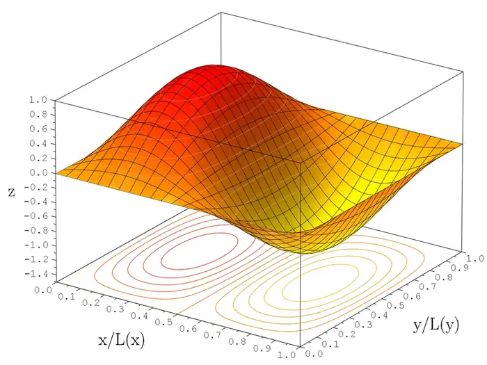
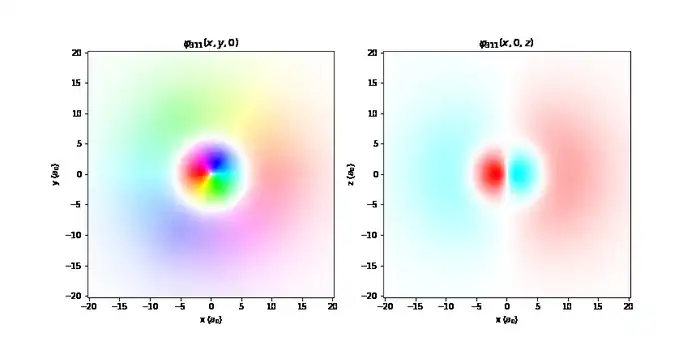
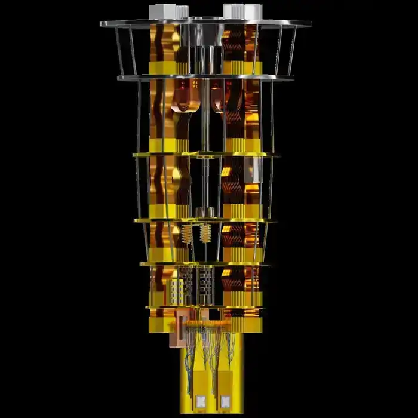

The mechanism
Decoherence explains why superpositions vanish for big objects: interaction with the environment entangles them with countless degrees of freedom, and the interference terms become unobservable in practice. That solves part of the problem — it explains the absence of interference, not the presence of definite outcomes.
Maps, diagrams and images






Wojciech Zurek's addition is einselection plus redundancy. Certain states — the 'pointer states' — survive interaction with the environment; others get scrambled. Those surviving states are the ones the environment then copies, not once but many times, into light, air molecules and heat.
Why redundancy matters
If the environment holds many independent copies of the same information about a system, then any observer who samples a small part of the environment gets the same answer. That is a candidate explanation for objectivity: 'the cat is alive' is true because the information is available in millions of places, not because a mind collapsed anything.
Quantum Darwinism makes this quantitative: the mutual information between the system and a fragment of the environment should rise steeply with fragment size, saturating once the fragment holds one copy.
Supporting experiments: photonic and spin systems have shown the predicted redundancy structure, which is real evidence the mechanism operates.
The gap: redundancy explains why observers agree, not why exactly one outcome occurs. It is compatible with a single world where all outcomes happen (many-worlds) — Zurek's own reading — and with interpretations that add collapse.
The criticism: the derivation assumes a split between system and environment that is itself vague, and the 'classical' states it selects depend on the interaction, not on anything absolute.
So the label is live debate: the physics of decoherence and redundancy is well established, and the claim that this fully solves the measurement problem is not.
Why it is in the archive
Because it is the most physically grounded attempt to explain why the world looks classical, and because it is frequently reported as if it had finished the job.
It pairs with pilot-wave theory (which removes the need) and objective collapse (which adds physics to finish it).
Sources for this page
- Wikipedia, “Quantum Darwinism” — einselection, redundancy, criticismen.wikipedia.org
- Zurek (2009), Nature Physics 5, 181 — “Quantum Darwinism”doi.org
- Zurek (2003), Reviews of Modern Physics 75, 715 — decoherence and einselectiondoi.org
- Wikipedia, “Quantum decoherence” — the underlying mechanismen.wikipedia.org
Open resources on this topic
- BookQuantum Darwinism: Entanglement, branches, and the emergent classicality of redundantly stored quantum informa — ['Robin Blume-Kohout', 'W. H. Zurek'] · 2005 (Internet Archive, free to read)
- BookRedundancy of einselected information in quantum Darwinism: The irrelevance of irrelevant environment bits — ['Michael Zwolak', 'Wojciech H. Zurek'] · 2017 (Internet Archive, free to read)
- BookRedundant Information from Thermal Illumination: Quantum Darwinism in Scattered Photons — ['C. Jess Riedel', 'Wojciech H. Zurek'] · 2011 (Internet Archive, free to read)
- PapersOpen-access articles: DOAJ · PubMed Central · Internet Archive Scholar
- BooksPublic-domain and borrowable copies: Open Library · Project Gutenberg · Google Books
Cite this page
Momin, S. (2026). Quantum Darwinism. The Larger World Archive. https://drsamonline.github.io/LARGE_GLOBE/quantum-darwinism.htmlMomin, Sohil. “Quantum Darwinism.” The Larger World Archive, 2026, https://drsamonline.github.io/LARGE_GLOBE/quantum-darwinism.html.Momin, Sohil. “Quantum Darwinism.” The Larger World Archive, 2026. https://drsamonline.github.io/LARGE_GLOBE/quantum-darwinism.html.@misc{quantum2026quantum,
author = {Momin, Sohil},
title = {Quantum Darwinism},
year = {2026},
howpublished = {The Larger World Archive},
url = {https://drsamonline.github.io/LARGE_GLOBE/quantum-darwinism.html},
note = {Last reviewed 20 November 2026}
}Last reviewed 20 November 2026 · Corrections policy · this page is not peer reviewed